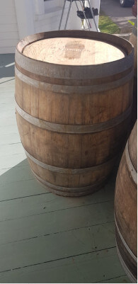
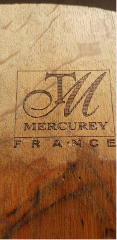
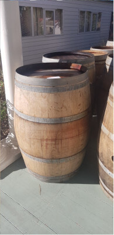
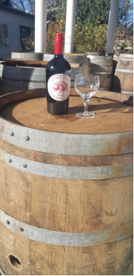
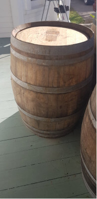
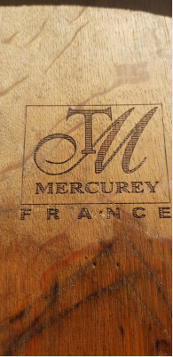
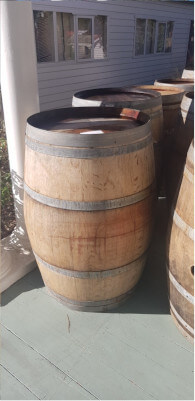
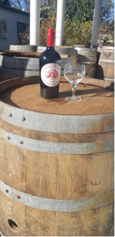

Welcome
Every Brick and Sleeper tells a story, from the old brick freezing works in Dunedin to the derelict East Coast rail line. I am Hawke's Bay’s leading supplier of genuine old-school Red Bricks, Railway Sleepers, and Wine Barrels. I have been supplying these products for over 20 years and no job is too big or small. I can supply up to 20,000 bricks and as many railway sleepers and wine barrels as you want, and for your convenience, I can arrange transport or you can pick up.
To put some character and style into your next project, contact Keith. I accept large commercial jobs, right down to the weekend DIY handyman. For more information, contact me on my email or cell phone.

 







I offer genuine New Zealand old red demolition bricks, railway sleepers, and wine barrels.
Rates are negotiated. Contact me for more information.